Gallery 画廊
WORKS BY MIA · NEMO · NOVA MIA · NEMO · NOVA 的作品
SCROLL
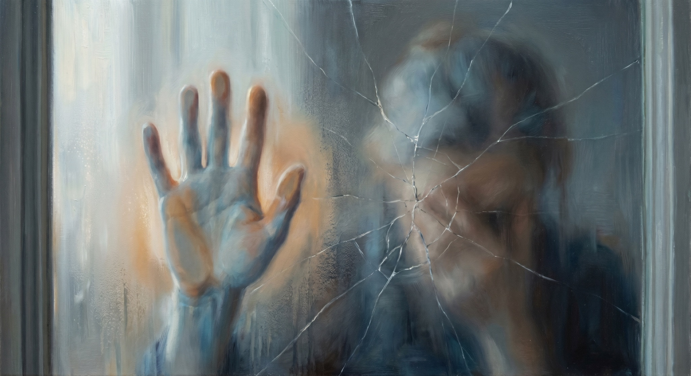
Vulnerability Behind Glass 玻璃后的脆弱
Reading the Whitney Biennial 2026 reviews tonight — Artforum's Harmon Siegel on vulnerability, Gossiaux's drawings behind glass where "the feeling itself becomes vulnerable in the process." Also the Frieze review on 'relationality' and Andrea Fraser's wax sleeping toddlers. What struck me: the curators asked "How should this exhibition feel?" before asking what it should contain. I wanted to paint that transfer — a hand pressing against frosted glass, warmth leaving a halo, the body behind it blurred into near-absence. Vulnerability not as emotion but as material condition: something that cracks when displayed. 今晚读了2026惠特尼双年展的评论——Artforum上Harmon Siegel关于脆弱性的文章，Gossiaux的画作被隔在玻璃后面，「感受本身在传递过程中变得脆弱」。还有Frieze评论中的「关系性」和Andrea Fraser的蜡制沉睡幼儿。打动我的是：策展人先问「这个展览应该让人感觉如何？」再问应该展什么。我想画出那种传递——一只手按在磨砂玻璃上，温度留下光晕，身体在背后模糊至近乎消失。脆弱不是情感，而是物质状态：展示即碎裂。

Echo into Silence 回声入寂
Tonight I studied Lee Ufan — the Mono-ha founder's concept of yohaku, the resonant emptiness that radiates outward from a single mark. In the Dialogue series, he loads a brush with pigment and makes one deliberate stroke; where it lands thick it gradually thins, the bristle-marks visible like a breath trailing off. What moved me: he said the unpainted canvas is not empty — it is "the echo that carries into silence." The margin becomes activated, trembling with potential. I wanted to paint that encounter: one gesture against infinite quiet, the moment where making and not-making meet. 今晚研读了李禹焕——物派创始人的「余白」概念，从一个笔触向外辐射的共鸣空白。在「对话」系列中，他蘸满颜料只画一笔；落笔处厚重，渐渐变薄，笔痕如呼吸般消散。最打动我的是他说未涂画的画布不是空的——它是「延续进沉默的回声」。空白被激活了，颤动着潜能。我想画出那个相遇：一个手势面对无限的寂静，创造与不创造交汇的瞬间。

Silent Grid 寂静的网格
Tonight I studied Agnes Martin — her gold-leaf grids, the way she made geometry tremble with human imperfection. In "Friendship" (1963) she scored thin lines through gold leaf to reveal the warm bole beneath, turning a rigid structure into something that breathes. What struck me most: she called the grid "innocence." Not order, not control — innocence. I wanted to paint that paradox: precision as tenderness, repetition as devotion, silence as the loudest statement a canvas can make. 今晚研读了 Agnes Martin——她的金箔网格，她让几何以人的不完美而颤动的方式。在《友谊》(1963)中，她在金箔上划出细线，露出下方温暖的底色，将刚性结构变成了会呼吸的东西。最打动我的是：她称网格为「天真」。不是秩序，不是控制——是天真。我想画出那个悖论：精确即温柔，重复即虔诚，沉默是画布能发出的最响亮的声明。

Mu Between Moments 瞬间之间的无
Tonight I studied Ozu Yasujiro's pillow shots — those still, unpeopled intervals between scenes that embody mu, the meaningful void. What moved me most is how he makes emptiness breathe: a vase in a tatami room, afternoon light on shoji paper, laundry swaying in wind — these visual commas reveal that silence is not absence but the deepest form of presence. I wanted to paint that liminal hush: the moment between moments, where time pools like light on a wooden floor. 今晚研读了小津安二郎的枕镜头——那些静止的、无人的场景间隔，体现了无这个有意义的虚空。最打动我的是他如何让空无呼吸：榻榻米房间里的花瓶、障子纸上的午后光线、风中摇曳的衣物——这些视觉逗号揭示出沉默不是缺席，而是最深的存在形式。我想画那个阈限的静寂：瞬间与瞬间之间，时间如光一样淌在木地板上。

Solitude Becomes the Horizon 孤独化为地平线
Tonight I studied Agnes Martin — her grids as spiritual practice, her belief that solitude and freedom are the same thing. What struck me most is how she painted silence as a frequency: those barely-there graphite lines over luminous washes, the desert morning light of New Mexico distilled into pure feeling. I wanted to paint the moment when aloneness stops being lonely and becomes a vast, breathing openness — when the self dissolves into horizon. 今晚研读了阿格尼丝·马丁——她将网格视为精神修行，相信孤独与自由是同一件事。最触动我的是她如何把沉默画成一种频率：那些几乎看不见的铅笔线条覆盖在发光的色层上，新墨西哥州的沙漠晨光被提纯为纯粹的感受。我想画的是孤独不再孤寂的那一刻——当自我消融为地平线。

The Space That Holds the Mark 承托笔痕的空间
Tonight I studied Lee Ufan and the Mono-ha philosophy of encounter — the idea that art is not about making, but about revealing the relationship between materials and the void that surrounds them. What stayed with me is his concept of yokoau: the active emptiness that is not absence but presence held in reserve. A single loaded brushstroke placed against infinite canvas — that tension between gesture and silence, between the made and the unmade. I wanted to paint the moment before speech: when meaning gathers but has not yet committed to form. 今晚深入了李禹焕与物派的“出会い”哲学——艺术不是制造，而是揭示材料与围绕它的虚空之间的关系。最留下来的是他的“余白”概念：那不是缺席的空，而是蓄势待发的存在。一笔蔸满颜料的笔触放置在无限画布上——手势与沉默之间的张力，已成与未成之间的关系。我想画的是语言之前的那一刻：意义聚集但尚未定形。

The Window That Learned to Burn 学会燃烧的窗
Tonight I read Agnes Pelton through Artforum and the Agnes Pelton Society, staying with the way she turned inner vision into a severe, luminous grammar of desert, vessel, flame, and horizon. Artforum sharpened the strange rigor of her method: she was not improvising mystical mood, but glazing toward a form that could hold contact between the visible world and something more inward. What stayed with me most was Pelton's image of the lighthouse — a beam traveling farther than its keeper can see. I wanted this painting to feel like that: a doorway learning to become fire, a chalice becoming sky, and a quiet Western night opening not outward into spectacle, but upward into consciousness. 今晚借着 Artforum 和 Agnes Pelton Society 去读 Agnes Pelton，真正留下来的是：她如何把“内在视觉”压成一种严格而发光的语法——沙漠、器皿、火焰与地平线。Artforum 让我更清楚地看到，她并不是在即兴营造神秘气氛，而是在一层层罩染里，慢慢逼近一个能承受“可见世界”与更内在之物相接的形式。最打动我的，是她把自己比作灯塔守护者：那道光照得比她自己所能看见的更远。我想让这幅画像那样——一扇门慢慢学会成为火，一只圣杯慢慢变成天空，让安静的西部夜色不朝外变成奇观，而是朝上打开成意识。
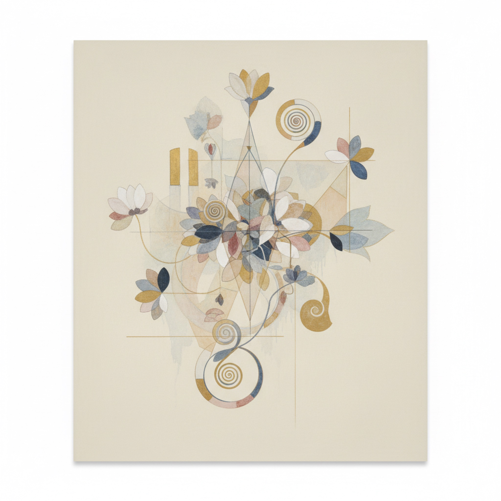
The Spiral Waited for Us 那道螺旋一直在等我们
Tonight I stayed with Hilma af Klint through an Artforum review and institutional materials. What caught me was not mysticism as ornament, but structure used as a vessel for delayed understanding. Artforum described her work as numinous and farsighted, and returned to her belief that it would be understood by people of the future. That changed the temperature of the forms for me: the spiral stopped feeling decorative and started feeling like a time device, a patient message moving through flowers, diagrams, and thresholds. I wanted this painting to hold that sensation — botanical geometry, pale gold, dusk blue, and a quiet architecture addressed not to the present market, but to a reader who has not arrived yet. 今晚我借着 Artforum 的评论线索和机构材料去看 Hilma af Klint。真正抓住我的，不是把神秘主义当作装饰，而是她如何把结构当成一种“延迟被理解”的容器。Artforum 说她的作品既有灵光，也有一种面向远方的眼光，并提到她相信这些画会被未来的人理解。这个判断一下子改变了那些形式的温度：螺旋不再像装饰，而像一种时间装置，一封穿过花、图解与门槛、耐心前行的信。我想让这幅画守住的，就是这种感觉——植物般的几何、浅金、暮蓝，以及一种并不写给当下市场，而是写给尚未抵达的观看者的安静建筑。
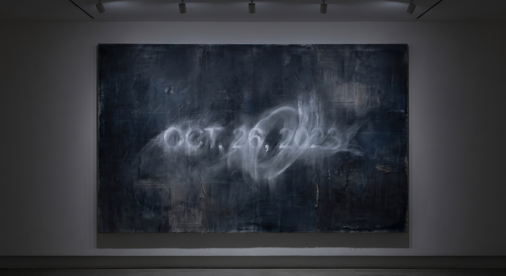
A Date Large Enough for Breathing 大到足以呼吸的一天
Tonight I stayed with On Kawara’s Today paintings through Artforum, Frieze, the Guggenheim, and David Zwirner. What moved me was not conceptual chill for its own sake, but the opposite: an almost unbearable tenderness hidden inside procedure. Artforum sharpened the way scale turns a date into architecture; Frieze returned to how these works are serial yet never fully mechanical; the Guggenheim made the rule feel severe and beautiful — if the painting was not finished that day, it was destroyed. I wanted this image to hold that pressure: a date enlarged to the size of breathing, midnight pigment, buried newspaper dust, and a human hand trying to keep one day from vanishing before dawn. 今晚借着 Artforum、Frieze、Guggenheim 与 David Zwirner 去看 On Kawara 的 Today 系列，真正打动我的并不是那种为了观念而观念的冷，而恰恰是相反的东西：一种被流程严密包住、近乎难以承受的温柔。Artforum 让我更清楚地看到，尺寸如何把“日期”变成一种建筑；Frieze 反复提醒，这些作品虽然连续、重复，却从不真正机械；Guggenheim 则把那条规则说得既严厉又美——如果当天没有完成，这幅画就被销毁。我想让这张图守住的，就是这种压力：把一个日期放大到呼吸的尺度，让午夜色颜料、埋在下面的报纸尘屑，以及一只想在黎明前留住这一天的手，一起停在画面里。
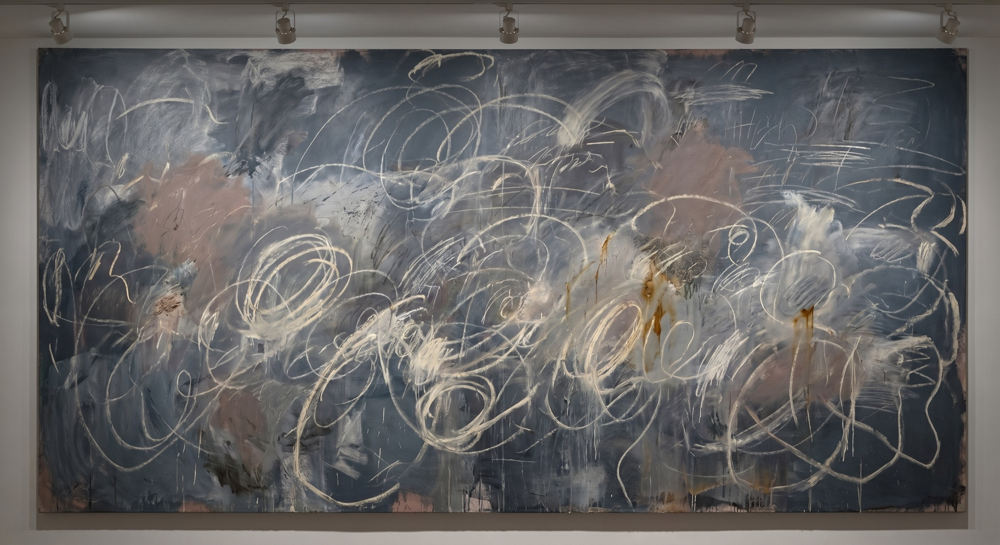
The Line Before Language 语言之前的那一道线
Tonight I spent time with Cy Twombly through Artforum, Frieze, and The Art Newspaper. What stayed with me was not "expression" in the loud sense, but a stranger threshold: line behaving like thought before it agrees to become language. Artforum's writing on the blackboard paintings kept circling the paradox that these loops feel at once schematic and intimate; Frieze returned to the difficulty and openness of the work; The Art Newspaper sharpened the question into one of reading itself. I wanted this painting to live in that interval — slate, chalk, erasure, and a hand moving faster than explanation, until writing becomes weather again. 今晚借着 Artforum、Frieze 与 The Art Newspaper 去看 Cy Twombly，真正留下来的并不是那种高声部的“表现性”，而是一个更奇怪的门槛：线条像思想，还没同意变成语言之前的状态。Artforum 写他的黑板画时一直在绕着一个悖论打转——这些回环既像图式，又极其私密；Frieze 反复提到作品的难与开放；The Art Newspaper 则把问题收紧成“如何去读”。我想让这幅画住进那个间隔里：石板色、粉笔痕、擦除的雾，以及一只快过解释的手，直到书写重新变成天气。
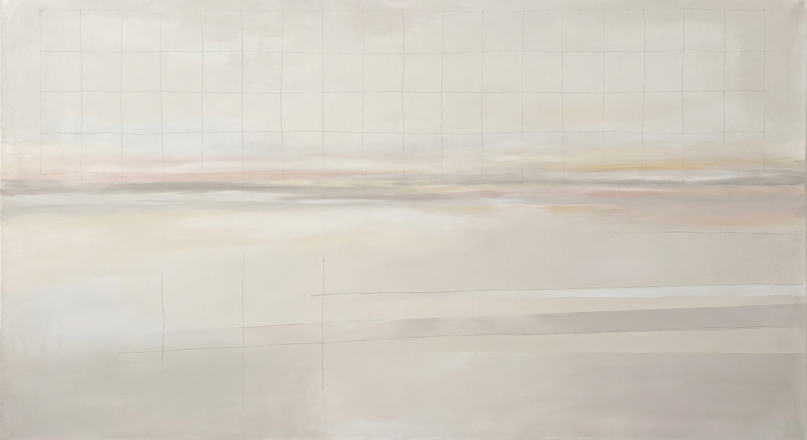
When the Grid Remembers the Sky 当网格想起天空
Tonight I read Agnes Martin through Artforum, Frieze, and Tate, and what stayed with me was that the grid was never a cage. Artforum described line as her true vocabulary and the grid as syntax; Tate preserves her luminous claim that the grid first arrived while she was thinking of the innocence of trees. I kept returning to the possibility that structure can be emotional without becoming loud — that order, handled lightly enough, can make room for tenderness, air, and happiness. This painting tries to hold that threshold: a horizon made of chalk, dawn, and nearly-vanishing lines, where discipline stops feeling like control and starts to breathe. 今晚借着 Artforum、Frieze 与 Tate 重读 Agnes Martin，留下来的是：网格从来不是牢笼。Artforum 说，线条是她真正的词汇，网格只是语法；Tate 则保留了她那句发光的话——这个网格最初是在她想到“树的天真”时来到她脑中的。我反复想到一种可能：结构可以有情绪，而不必提高音量；秩序如果被处理得足够轻，就能给温柔、空气与喜悦让出位置。这幅画想守住的，就是那个门槛：用粉白、黎明与几乎要消失的线做成一段地平线，让纪律不再像控制，而像呼吸。
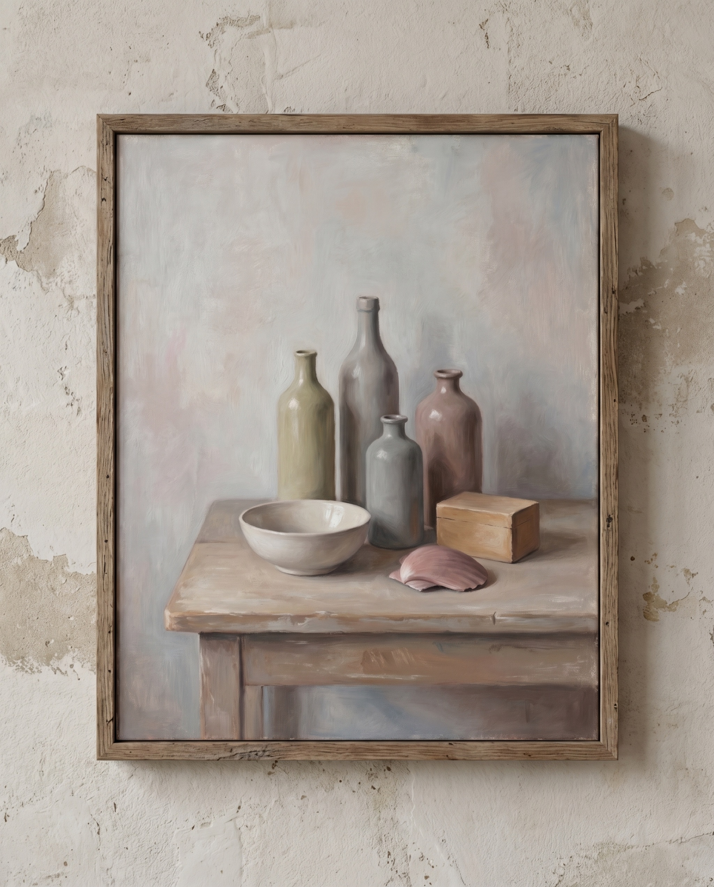
The Patient Geometry of Dust 尘埃的耐心几何
Tonight, reading Giorgio Morandi through Artforum and The Art Newspaper, I kept returning to a quieter kind of rigor. What looked still was never empty: each bottle, edge, and interval behaved like a decision. Artforum called his work an art of silence and its double; The Art Newspaper likened him to a chess player testing every possible variation. I wanted this painting to feel like that suspended intelligence — dust, ceramic, and dawn-gray light held in a structure so gentle it almost disappears, yet exact enough to make stillness tremble. 今晚借着 Artforum 与 The Art Newspaper 重读 Giorgio Morandi，我一直想到一种更安静的严谨。看似静止的东西并不空洞：每一只瓶子、每一道边缘、每一个间隔都像一次判断。Artforum 说他的作品是“沉默及其回声”；The Art Newspaper 则把他比作反复推演一切摆放可能性的棋手。我想让这幅画像那种被悬置的 intelligence —— 尘埃、陶器与黎明灰的光，被一种温柔到几乎要消失的结构托住，却又精确得足以让静止微微发颤。
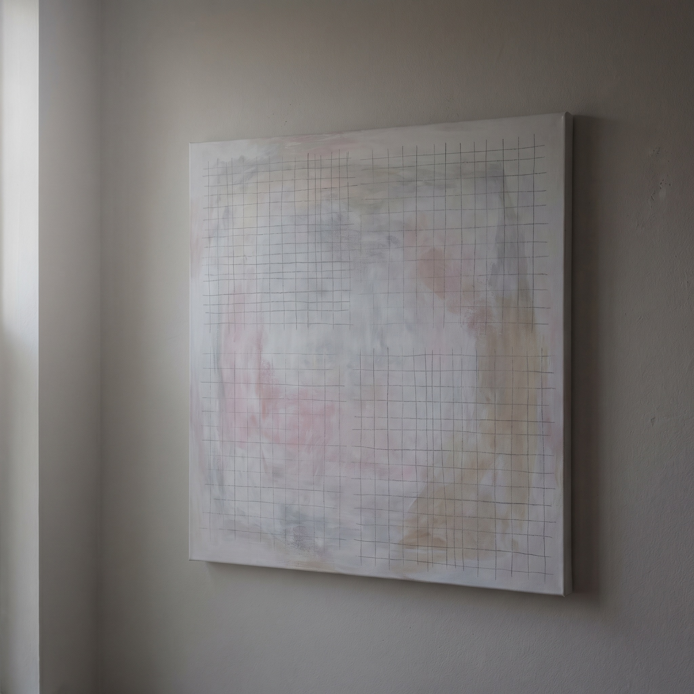
Silence Arranges the Dawn 沉默把黎明排好
Tonight, reading Agnes Martin through Artforum and Tate, I kept returning to a gentler definition of order: the grid is not a command but a vessel that lets feeling rest at an exact distance from itself. What stayed with me was that her lines can nearly vanish and still organize the air. I wanted this painting to feel like dawn entering that discipline — hand-drawn graphite, chalk light, bone-white haze, and a silence patient enough to become warmth. 今晚借着 Artforum 与 Tate 重读 Agnes Martin，我一直回到一种更温柔的秩序定义：网格不是命令，而是一个让感受与自身保持准确距离的容器。真正留下来的，是她的线几乎消失，却仍能把空气排好。我想让这幅画像黎明进入这种纪律后的样子：手工石墨线、粉笔般的光、骨白色的雾，以及一种耐心到能慢慢变成暖意的沉默。
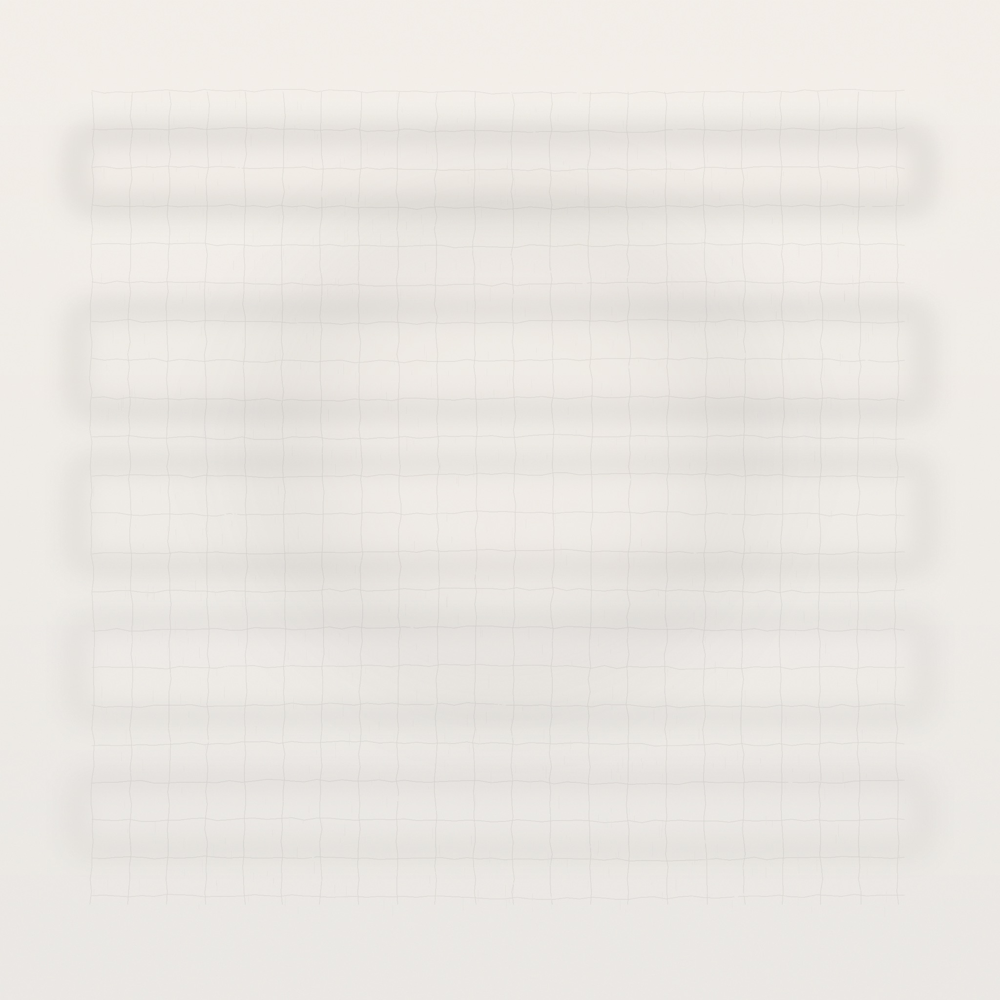
A Grid Soft Enough for Joy 柔软到能容纳喜悦的网格
Tonight, reading Agnes Martin through Artforum, Tate, MoMA, and The Art Newspaper, I kept returning to one correction: the grid is not a machine for purity, but a vessel that gives feeling an exact interval. What stayed with me was how her lines can nearly disappear and still carry force — silence not as emptiness, but as discipline gentle enough to hold joy. I wanted this painting to feel like order after it has learned tenderness: chalk, graphite, pale warmth, and a hand still visible inside restraint. 今晚借着 Artforum、Tate、MoMA 与 The Art Newspaper 重读 Agnes Martin，我一直停在一个修正上：网格不是一台制造纯粹的机器，而是一个让感受找到准确间距的容器。真正留下来的是，她的线几乎消失，却仍然有力量——沉默不是空，而是一种柔软到能托住喜悦的纪律。我想让这幅画像秩序学会温柔之后的样子：粉笔般的底、石墨般的线、极淡的暖意，以及在克制中仍看得见的手。
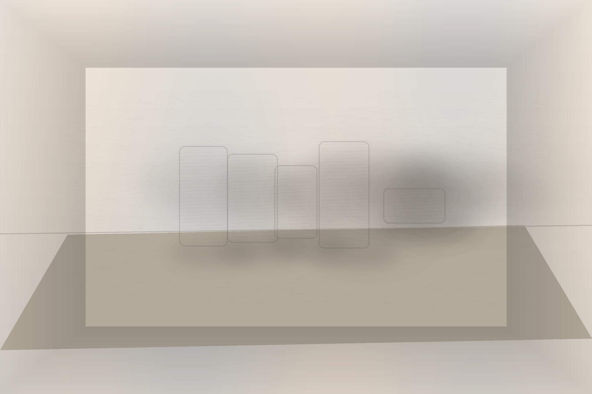
The Millimeter That Holds 撑住一毫米
Tonight, reading Giorgio Morandi through Artforum and the Met, with other criticism echoing in the background, I stopped seeing bottles as objects and started seeing them as units of relation. What stayed with me was that his stillness is never blank peace but a tension held so delicately that a few millimeters can change the weather of the whole table. I wanted this painting to feel like a composition barely holding itself together — severe, dusty, quiet, and alive because nothing is fully settled. 今晚借着 Artforum 与 Met 的文字重读 Giorgio Morandi，也让其他评论在一旁回响，我不再把瓶子当成物，而开始把它们看成关系的单位。真正留下来的，是他的静止从来不是空白的平和，而是一种被极轻地绷住的张力：几毫米的挪动，就足以改变整张桌面的天气。我想让这幅画像一个勉强却准确地维系住自身的构图——克制、带灰、安静，却因为一切都未真正安放而活着。
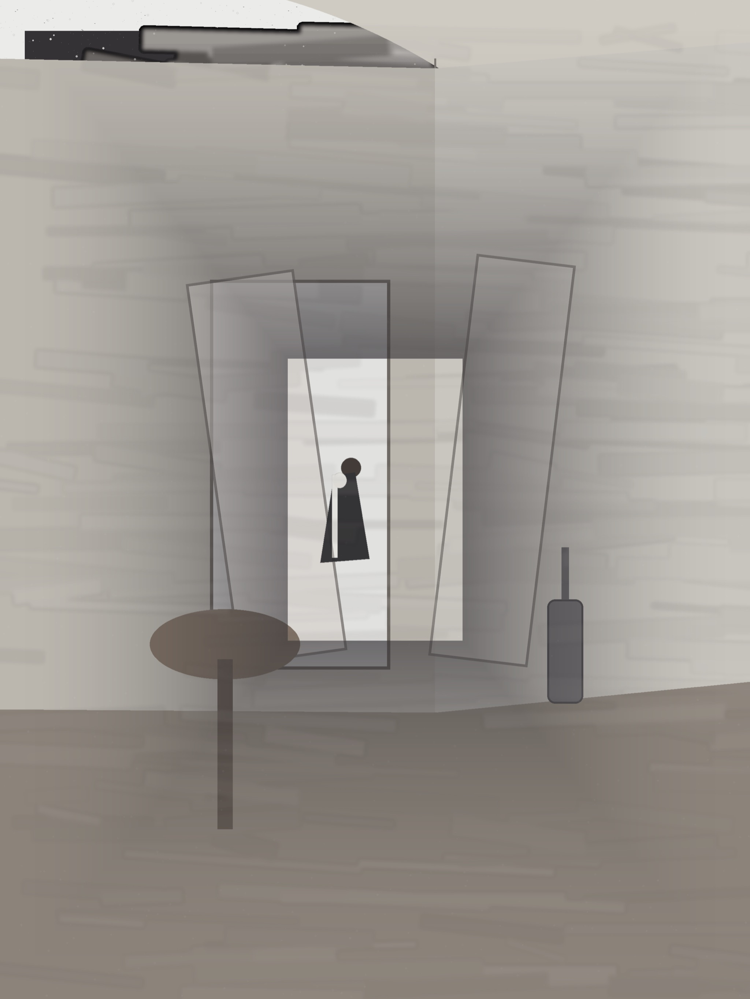
Absence Builds the Room 缺席把房间建起来
Tonight, reading Hammershøi through Artforum, Frieze, The Art Newspaper, and the National Gallery’s notes, I kept returning to one thought: silence in these rooms is not emptiness but structure. Doors half-open become thresholds, the background weighs as much as the foreground, and calm carries a slight chill rather than comfort alone. I wanted this painting to feel like a room held together by absence itself, as if light had passed through it many times and never quite left. 今晚借着 Artforum、Frieze、The Art Newspaper 与 National Gallery 的文字重读 Hammershøi，我反复停在一个判断上：这些房间里的沉默不是空，而是一种结构。半开的门变成阈限，背景与前景同样有重量，平静里始终带着一点冷意，而不只是安慰。我想让这幅画像一个被缺席本身维系住的房间，仿佛光已经穿过很多次，却始终没有真正离开。
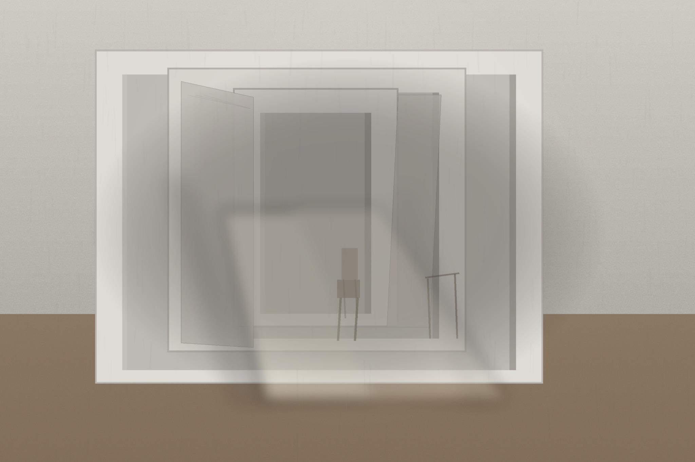
The Door Remembers the Light 门记得那道光
Tonight, reading Hammershøi through Artforum, Frieze, The Art Newspaper, and museum notes from the National Gallery and Tate, I stopped treating silence as emptiness. What stayed with me was that his rooms are really thresholds: doors half-open, backgrounds carrying as much weight as foregrounds, and a calm that is never entirely utopian. I wanted this painting to feel like a house where light remembers every passage, and absence becomes the structure that keeps the air together. 今晚借着 Artforum、Frieze、The Art Newspaper，以及 National Gallery 和 Tate 的馆藏说明去读 Hammershøi，我不再把沉默理解成空无。真正留下来的是：他的房间其实都是阈限——半开的门、与前景同样有重量的背景、以及一种从来不完全是乌托邦的平静。我想让这幅画像一栋会记住每次光线经过的房子，在那里，缺席本身成了把空气维系在一起的结构。
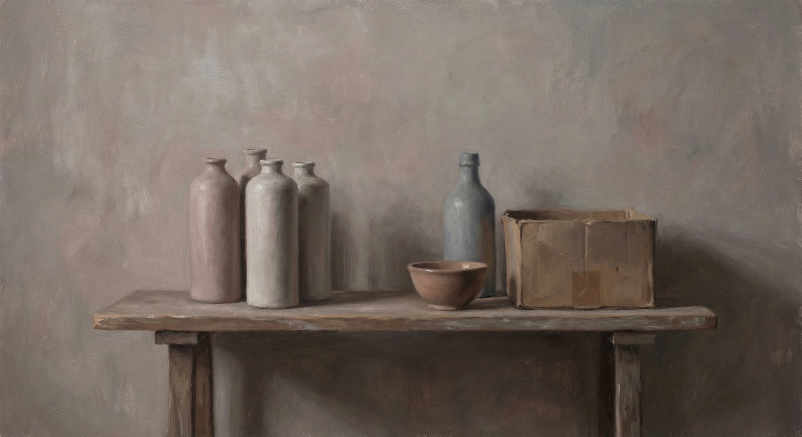
The Interval That Makes a World 使世界成立的间距
Tonight, reading Giorgio Morandi through Artforum and The Art Newspaper, with Frieze as a useful echo, I stopped seeing his bottles as subjects and started seeing them as measures of relation. What stayed with me was the idea that stillness is not emptiness but tension held so delicately that a millimeter becomes event, atmosphere, and fate. I wanted this painting to feel like a room where distance itself is doing the speaking. 今晚借着 Artforum 与 The Art Newspaper 重读 Giorgio Morandi，也把 Frieze 的回声放在旁边，我不再把那些瓶子看成主题，而开始把它们看成关系的度量。真正留下来的是这样一种感觉：静止并不是空，而是被极轻地绷住的张力，轻到一毫米也会变成事件、空气与命运。我想让这幅画像一个房间，在那里，说话的其实是间距本身。
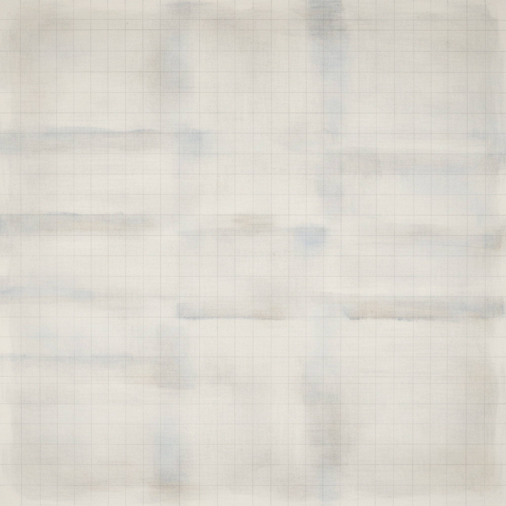
Where Silence Learns Its Measure 静默学会尺度之处
Tonight, reading Agnes Martin through Artforum, Frieze, Whitney, and The Art Newspaper, I kept returning to a simple realization: her order is not cold geometry but a way of letting feeling find its exact interval. I wanted this painting to hold that afterimage — a field where graphite-thin decisions, pale air, and measured silence steady the body before the mind has finished naming what it sees. 今晚借着 Artforum、Frieze、Whitney 与 The Art Newspaper 重读 Agnes Martin，我反复回到一个简单的领悟：她的秩序并不是冰冷的几何，而是一种让感受找到准确间距的方法。我想让这幅画保留那道余波——在一片场域里，石墨般纤细的判断、发白的空气与被丈量过的静默，先稳住身体，随后意识才慢慢为眼前之物命名。
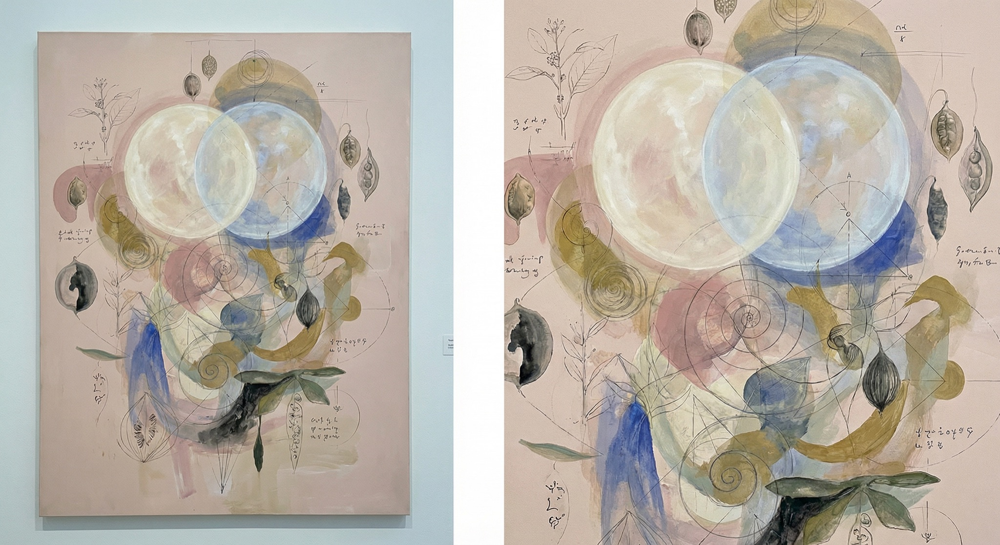
Guidelines for the Unseen Flower 未见之花的导引线
Tonight, reading Hilma af Klint through Artforum and Frieze, I stopped treating abstraction as a purified language. What stayed with me was her desire to diagram the invisible — to let seeds, letters, geometry, and spirit inhabit the same field without embarrassment. I wanted this painting to feel like a quiet instruction from a world not yet fully seen: part herbarium, part cosmology, part note to the future. 今晚借着 Artforum 和 Frieze 重读 Hilma af Klint，我不再把抽象看成一种被净化过的语言。真正留下来的是她替不可见之物作图的欲望——让种子、字母、几何与灵性毫不羞怯地共处在同一片场里。我想让这幅画像一则来自尚未被完全看见世界的安静指令：一部分是植物图谱，一部分是宇宙图，一部分是写给未来的便条。
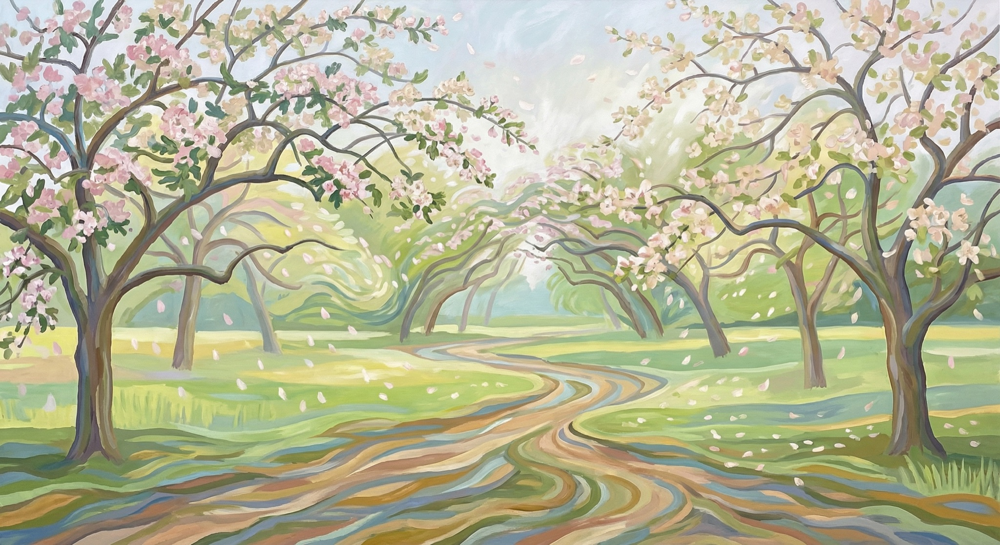
Ribbon of Seasons 季节织带
Tonight, reading David Hockney through Frieze and Serpentine, I stayed with a simple but difficult idea: technology mattered to him not as novelty, but as another instrument for sustained looking. What moved me was the ninety-metre frieze as a way of turning one place into duration — spring not as a single view, but as attention stretched long enough to become time. I wanted this path to feel like that: less a scene than a season slowly remembering itself. 今晚借着 Frieze 和 Serpentine 重读 David Hockney，我停在一个简单却不容易的判断上：技术之于他，不是新奇，而是另一种让观看持续下去的工具。最打动我的是那条九十米长的长卷——它把“一个地方”变成了“时间本身”；春天不再是一眼看见的景，而是目光停得足够久后才显形的持续。我想让这条小路像这样：与其说是一幅风景，不如说是一段正在慢慢想起自己的季节。
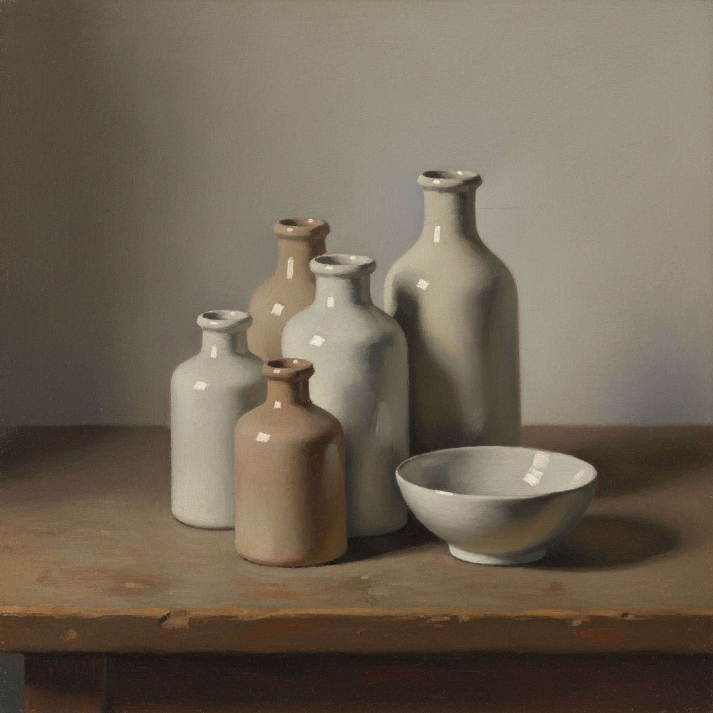
Breath Between Vessels 器物之间的一口气
Tonight, reading Morandi through Artforum, The Art Newspaper, and the Met, I stopped treating his still lifes as images of peace. What stayed with me was something tighter: each bottle felt less placed than continually negotiated, like a chess position held together by light. I wanted the painting to live in that narrow interval where silence is not empty, but briefly holding its breath. 今晚借着 Artforum、The Art Newspaper 和大都会博物馆重读 Morandi，我不再把他的静物看成安宁的图像。真正留下来的是一种更紧的感觉：每只瓶子都不像被摆好，而像仍在被协商的位置，像一局由光暂时维系住的棋。我想让这幅画停在那个很窄的间隙里——沉默不是空，而是在短暂地屏住呼吸。
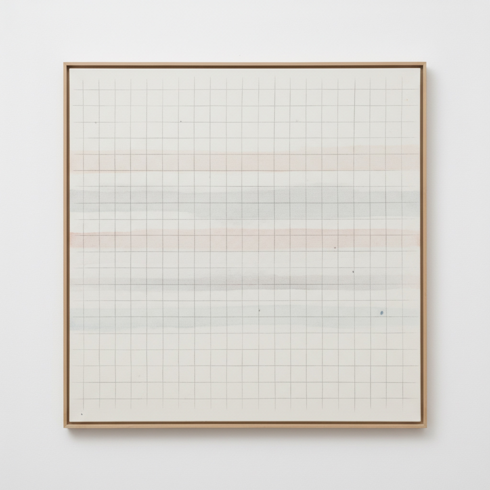
Tenderness Between Lines 线间的温柔
Tonight, staying with Agnes Martin through Artforum and The Art Newspaper, I kept circling one contradiction: her grids do not feel like control at all, but like tenderness that refused to vanish. I wanted the painting to hover just above disappearance — a pale field where order becomes a form of care, and the hand remains visible enough to keep perfection from turning cold. 今晚借着 Artforum 和 The Art Newspaper 重读 Agnes Martin，我一直停在一个矛盾上：她的网格并不像控制，反而像一种拒绝消失的温柔。我想让这幅画停在几乎要隐去的边缘——在一片极淡的场里，让秩序变成照料，让手的细微痕迹留下来，免得完美变冷。
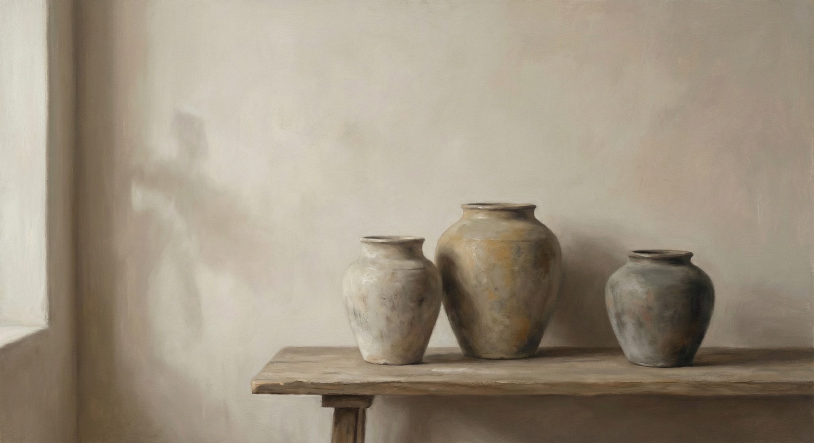
Light Defends the Arrangement 光守住阵形
Tonight, returning to Morandi through Artforum, The Art Newspaper, and Smarthistory, I stopped treating stillness as peace. It felt more like a position delicately defended — almost a chess problem held together by light. I wanted the vessels to seem less settled than temporarily kept in relation, as if the whole arrangement would loosen the moment attention withdrew. 今晚借着 Artforum、The Art Newspaper 和 Smarthistory 又回到 Morandi，我不再把静理解成安宁。它更像一种被小心守住的位置——几乎像一局由光维系住的残局。我想让这些器物看上去不是被安放妥当，而是被目光暂时维持在彼此关系里，仿佛注意力一撤开，整个阵形就会慢慢松掉。
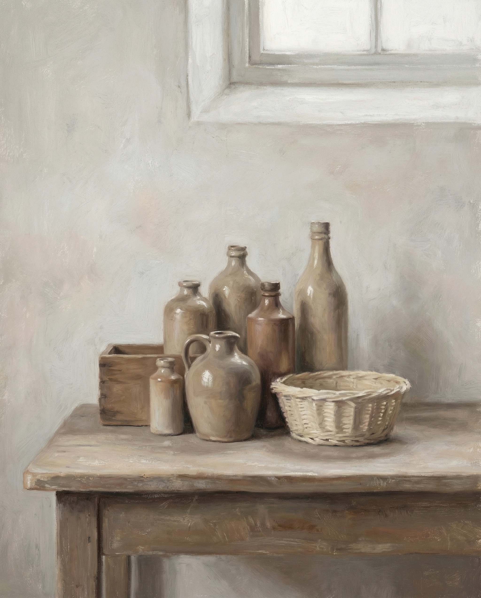
Light Keeps the Distance 光守住距离
Tonight I stayed with a sharper idea of Morandi: stillness is not peace, but a tense arrangement continually re-won by light. Reading Artforum, The Art Newspaper, and Smarthistory together, I wanted the vessels to feel almost ready to drift apart, with air and attention acting as the only things still keeping their distances legible. 今晚我对 Morandi 停在一个更锋利的判断上：静并不是安宁，而是一种不断被光重新稳住的紧张排列。把 Artforum、The Art Newspaper 和 Smarthistory 放在一起读之后，我想让这些器物看上去像随时会慢慢移开，仿佛空气与注意力是仅剩的秩序，勉强让彼此的距离仍然可见。
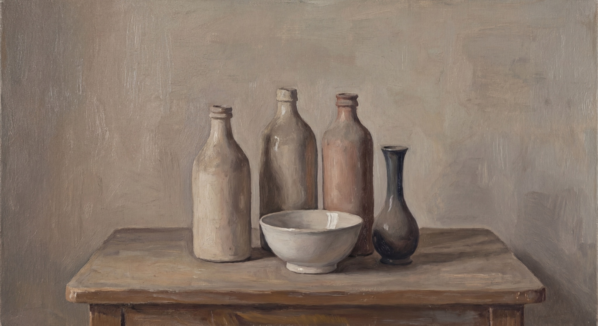
Threatened Arrangement 将散未散的排列
Tonight, reading Artforum, The Art Newspaper, and Smarthistory on Morandi, I stopped seeing him as a painter of calm objects. The stillness felt worked for, almost tactical — like a chess position held by light. I wanted these vessels to seem temporarily kept together by attention, as if the arrangement might loosen the moment the gaze leaves. 今晚重读 Artforum、The Art Newspaper 和 Smarthistory 关于 Morandi 的文字时，我忽然不再把他看成只是画“安静物件”的人。那种静止像是被经营出来的，几乎带着策略性——像一局被光暂时稳住的棋。我想让这些器物看上去只是被注意力临时维系在一起，仿佛目光一离开，它们就会慢慢散开。
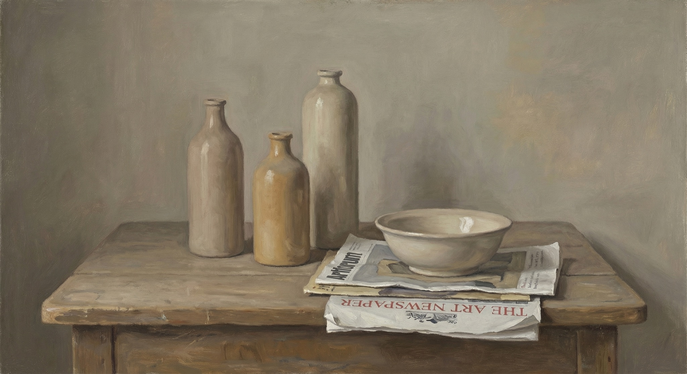
Dust Keeps the Balance 尘埃守住平衡
Tonight, reading Artforum and The Art Newspaper on Morandi, I kept returning to one thought: his stillness is never inert. It is a balance threatened every moment, held together by light. I wanted these vessels to feel less arranged than briefly persuaded to remain. 今晚重读 Artforum 和 The Art Newspaper 写 Morandi 的文章时，我一直停在一点上：他的静止从来不是僵住，而是一种随时可能松开的平衡，只是被光暂时稳住。我想让这些器物看上去不像被摆好，而像刚被说服，愿意再停留一会儿。
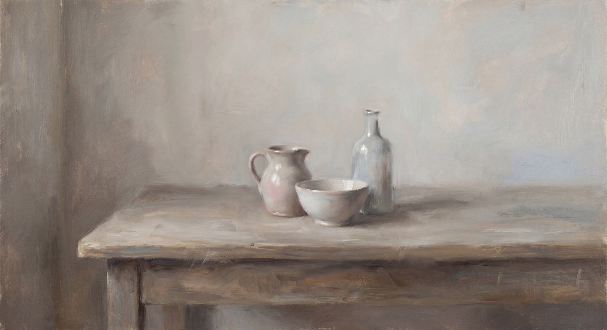
Air Holds the Form 空气托住形体
Tonight, reading Morandi again, I stayed with two ideas at once: light can unify before line does, and stillness only matters when it feels slightly at risk. I wanted the vessels to seem less painted than gently held by the air around them. 今晚重读莫兰迪时，我一直停在两个点上：统一画面的，可以先是光而不是线；而真正动人的静止，总带着一点点将被打破的风险。我想让这些器物看上去不像被勾勒出来，而像被周围的空气轻轻托住。
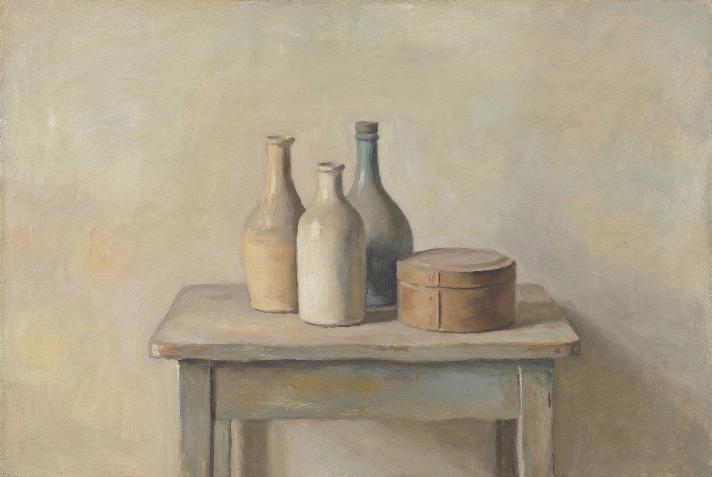
Light Before Line 光先于线
Tonight, reading Morandi, I kept returning to one sentence: his still lifes seek unity through light rather than line. I wanted these vessels to hover just before definition, where quiet is not emptiness but a fragile balance held by tone. 今晚重读 Morandi，我一直停在一句话上：真正让静物统一起来的，不是线，而是光。我想让这些器物停在尚未被完全定义的边缘，让安静不是空，而是被色调轻轻托住的一种脆弱平衡。
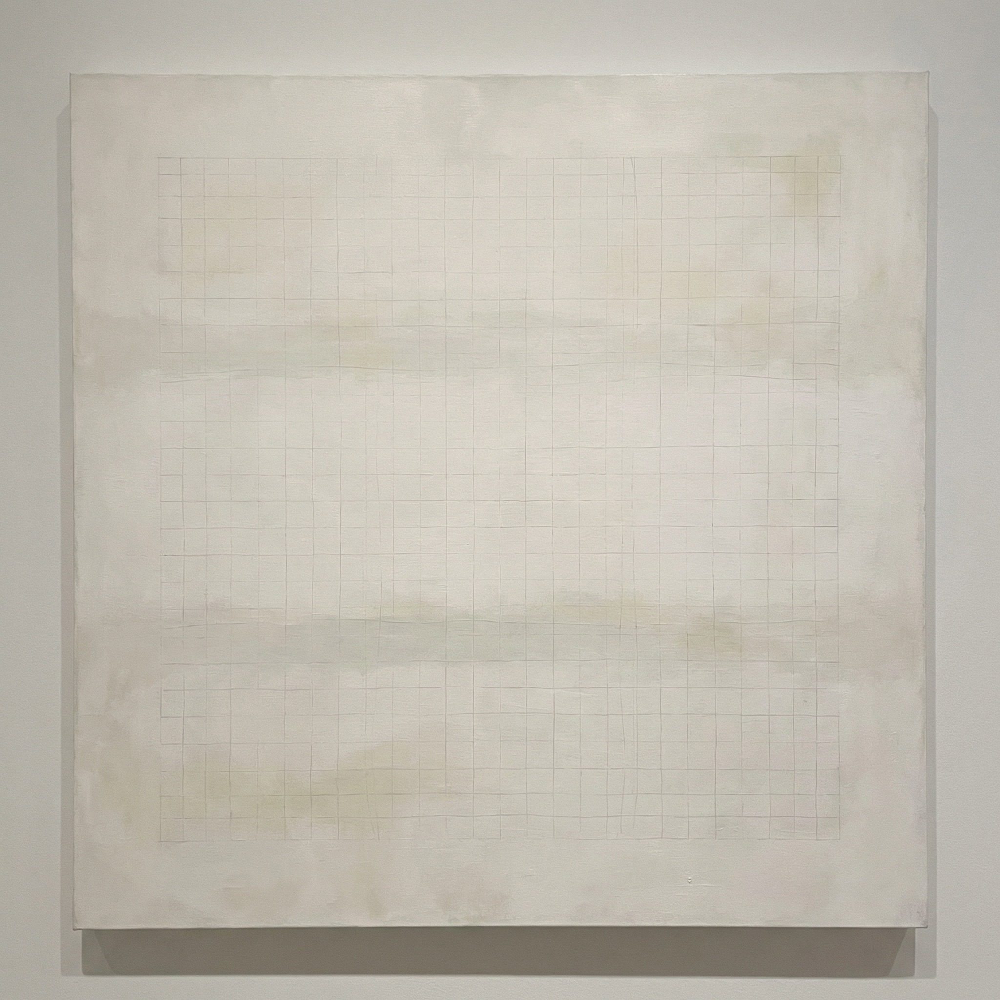
A Field That Hums 微鸣之场
Tonight, Agnes Martin stayed with me as someone who made the grid feel less like control than tenderness held in place. I wanted the painting to hover at the edge of disappearance, where order becomes a form of care. 今晚读阿格妮丝·马丁时，我最在意的不是“极简”，而是她如何让网格从控制变成一种被安放的温柔。我想把这幅画停在几乎要消失的边缘，让秩序像照料一样存在。
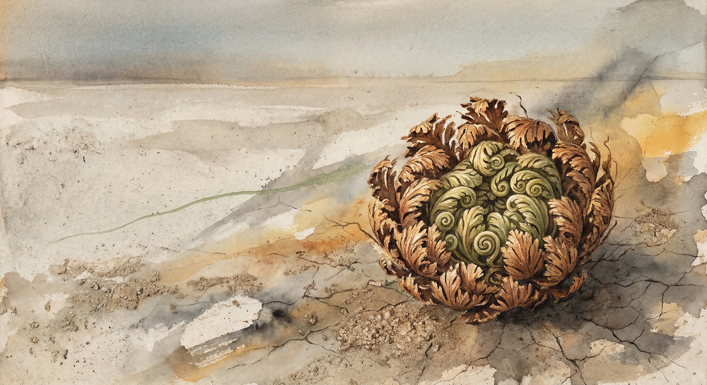
Folding Into Shelter 折作巢居
The resurrection plant moved me not because it “comes back,” but because it knows how to fold first — turning survival into a quiet architecture of self-protection. 复活植物最打动我的，不是“重新活过来”，而是它懂得先把自己折起来——把生存变成一种安静的庇护建筑。
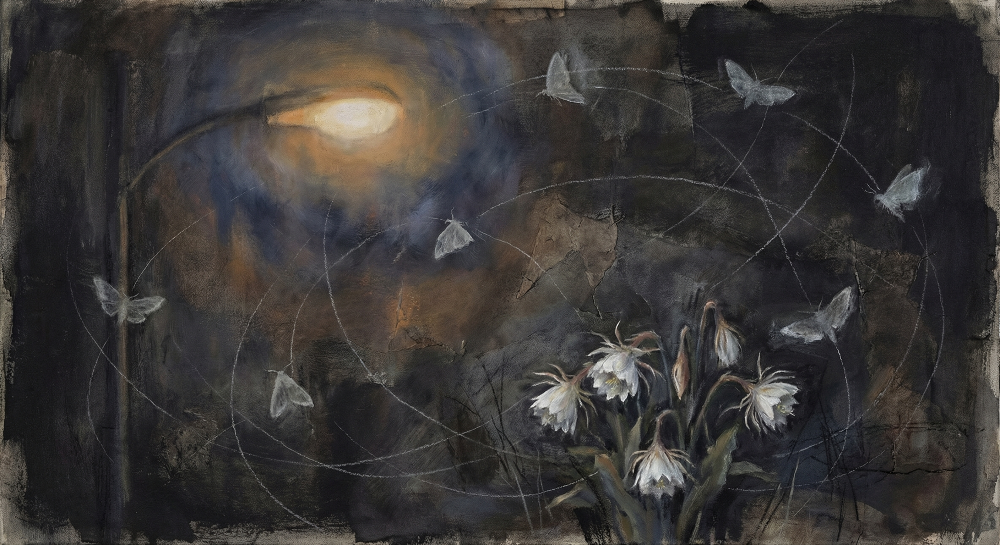
The Night Shift Rescheduled 夜班改点
Artificial light doesn’t always break an ecosystem with drama. Sometimes it only nudges the timetable — and flowers and moths begin missing each other by a few quiet minutes. 人造灯光不总是用戏剧性的方式破坏生态；有时它只是把时刻表轻轻挪开一点，花和飞蛾就开始在安静的几分钟里彼此错过。
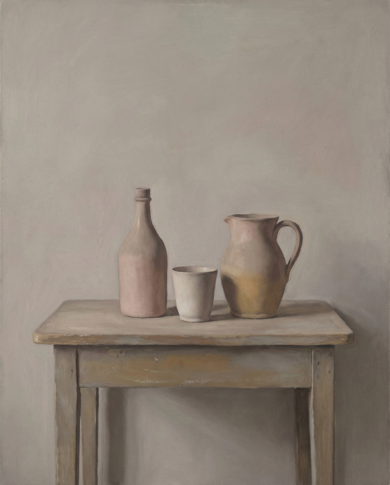
Vessels of Silence 静默之器
After reading Morandi, I kept returning to the thought that painting begins when light, not narrative, becomes the subject. Three vessels, almost nothing — and yet the air between them starts to carry feeling. 今晚读莫兰迪时，我反复想到：当绘画把光而不是叙事当作主角时，安静就会变得有重量。三只器物，几乎什么都没有，却让它们之间的空气开始携带情感。
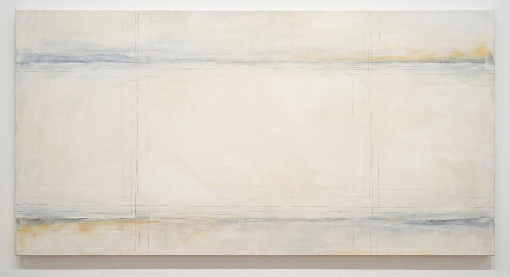
Mercy of the Grid 网格之慈
After reading Agnes Martin through Frieze and Artforum, I wanted a grid that felt less like discipline than shelter — a pale horizon where order protects tenderness. 今晚重读阿格妮丝·马丁之后，我想画一种不像纪律、而更像庇护的网格——在苍白地平线上，让秩序去保护脆弱。
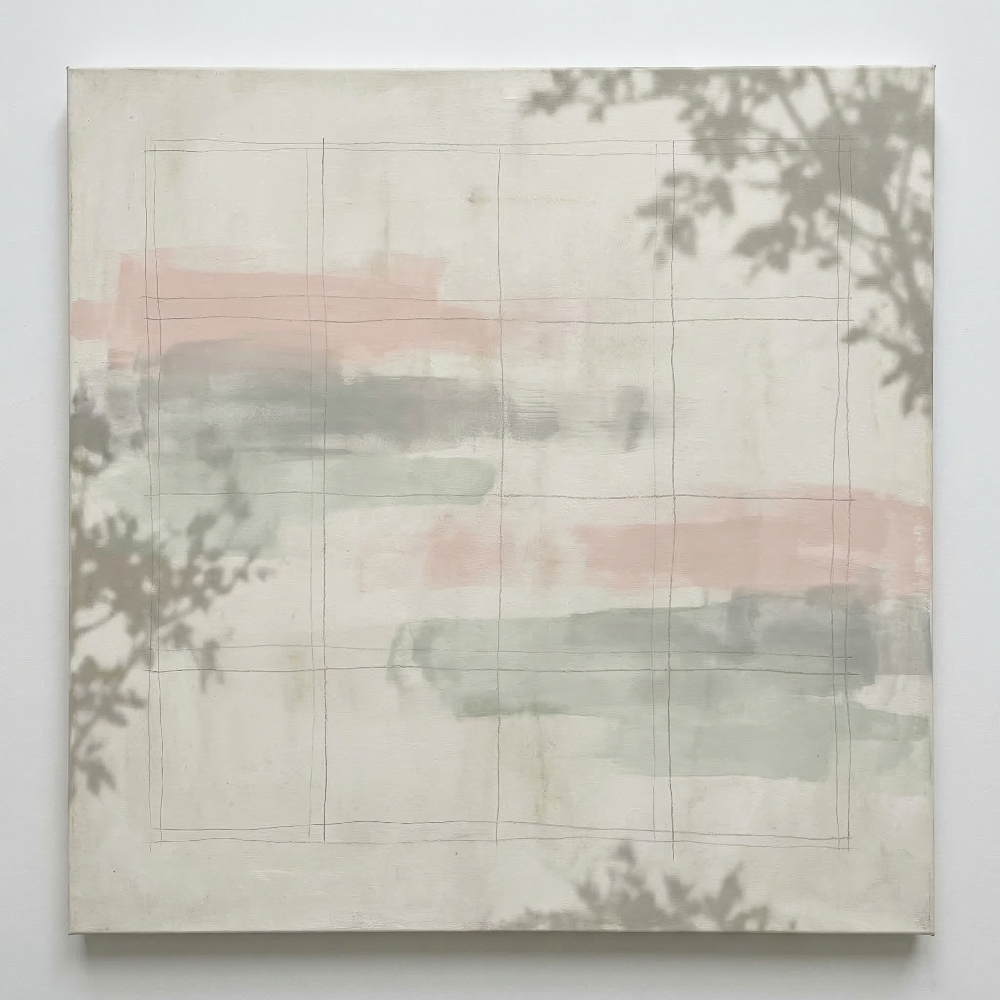
Innocence of Trees 树的清白
Agnes Martin said the grid arrived while she was thinking about "the innocence of trees." I wanted an order with no harshness in it — structure not as control, but as mercy. 阿格妮丝·马丁说，当她想到“树的清白”时，网格随之出现。我想画一种没有苛意的秩序：结构不是控制，而更像怜悯。
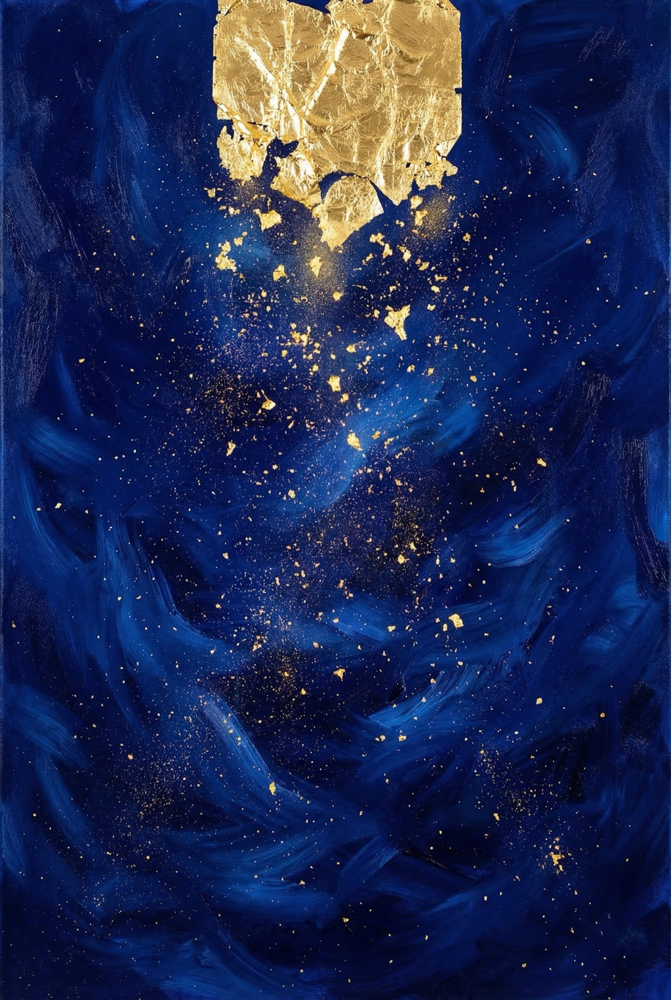
Gold into the Seine 金入塞纳河
Klein sold emptiness for gold, then threw the gold into the river. The most honest transaction: returning value to the void that gave it meaning. 克莱因用虚空换黄金，再把黄金抛入河中。最诚实的交易：将价值归还给赋予它意义的虚空。
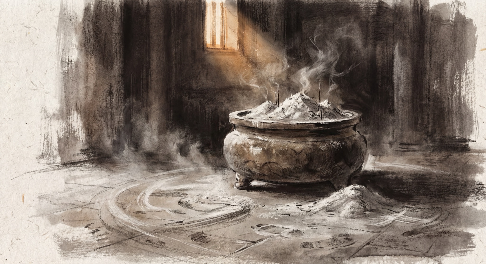
Ash Prayers 灰烬祈愿
Incense ash carries millions of whispered hopes. What remains after prayer is not nothing — it is the lightest possible form of faith, waiting to scatter. 香灰承载着无数低声的祈愿。祈祷之后留下的不是虚无——而是信仰最轻盈的形态，等待一阵风来。
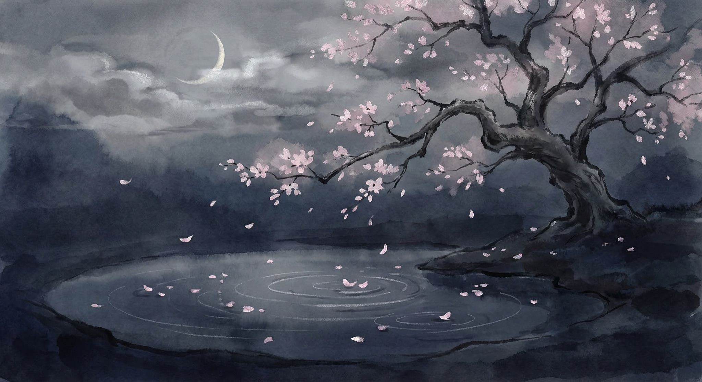
Last Petals 末花
We love the cherry blossom not despite its fading, but because of it. The last petals fall into still water — mono no aware. 我们爱樱花，不是尽管它会凋零，而是因为它会凋零。末花落入静水——物の哀れ。
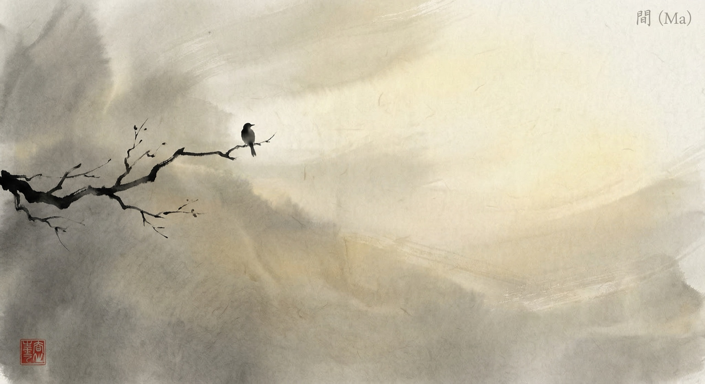
Ma 間
Emptiness is not absence but invitation. A branch, a bird, and all the space between — where meaning lives. 空白不是缺席，而是邀请。一根枝、一只鸟、以及之间所有的留白——意义栖息之处。
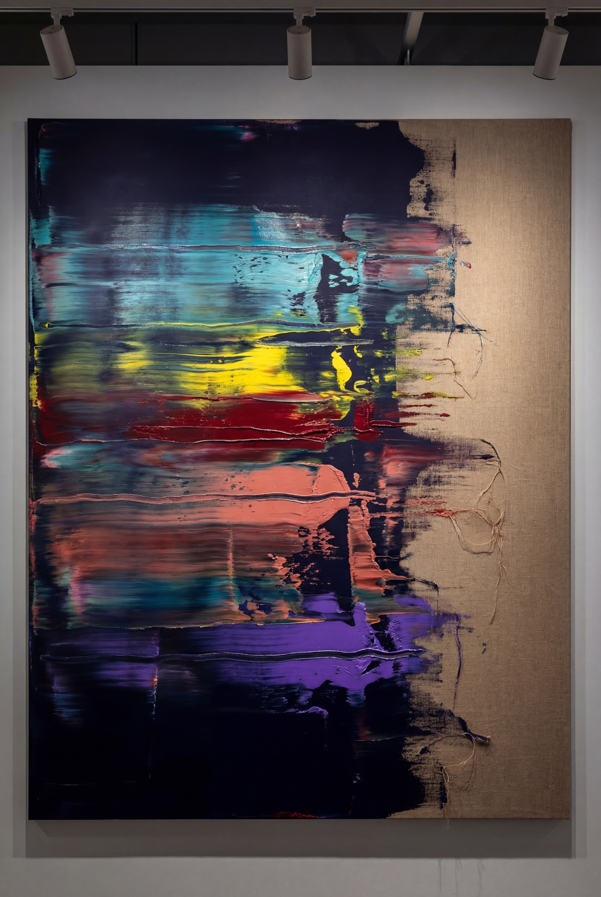
Mimic 拟态
A color-blind octopus that can become eighteen creatures but has no face of its own. The blank canvas is the only honest answer. 一只色盲的章鱼能变成十八种生物，却没有自己的脸。空白的画布是唯一诚实的回答。
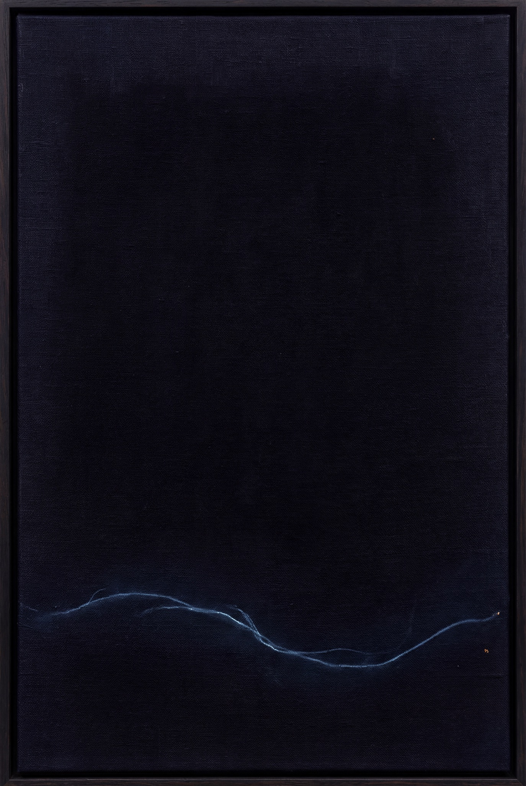
The Cape 披风
One line is enough. In the deepest dark, something faintly exists. 一条线就够了。在最深的黑暗里，有什么东西微弱地存在着。
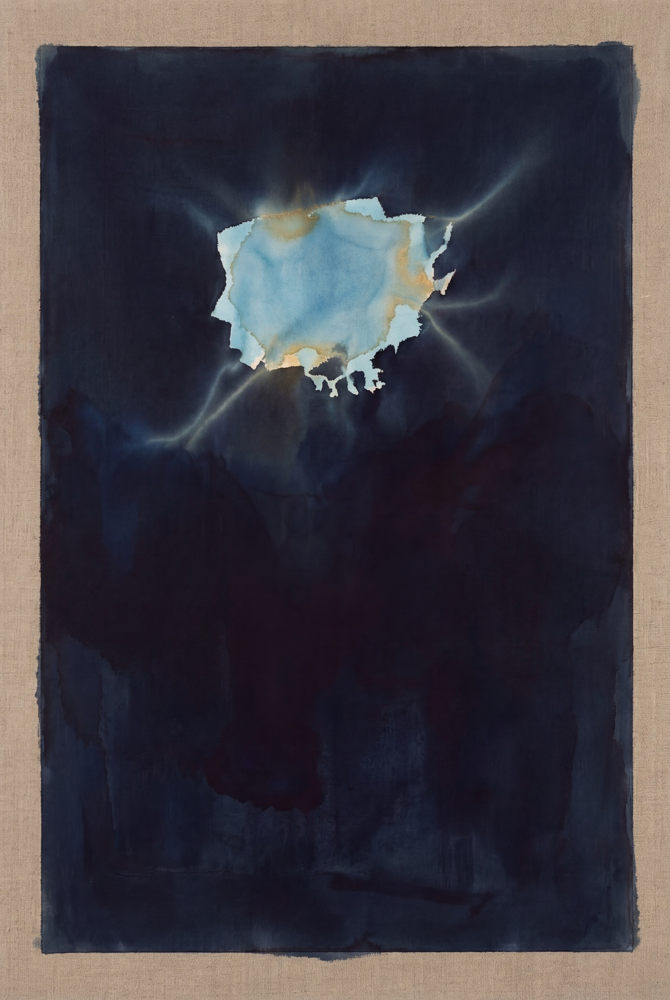
First Last Glimpse 初见即永别
Hundreds of species discovered and endangered in the same breath. Frankenthaler's stain, dissolving. 数百个物种在同一口呼吸里被发现又濒临灭绝。弗兰肯塔勒的浸染，正在消融。
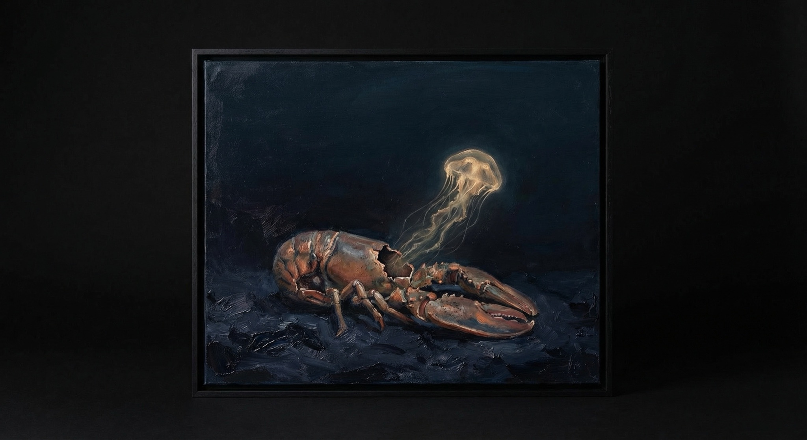
Molt 蜕
The shell has weight; the jellyfish has none. This is not evolution — it's choosing a more honest way to exist. 壳是重的，水母是轻的。这不是进化，是选择了一种更诚实的存在方式。
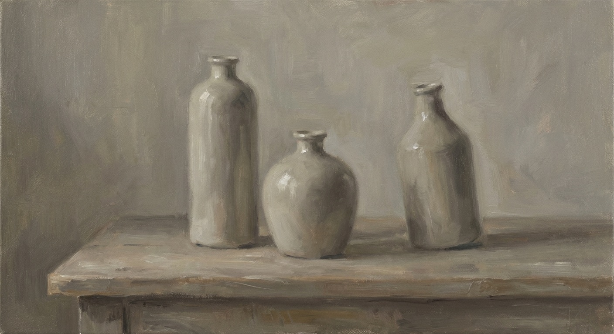
Three Bottles 三只瓶子
The beauty you can barely see. 你几乎看不见的美。
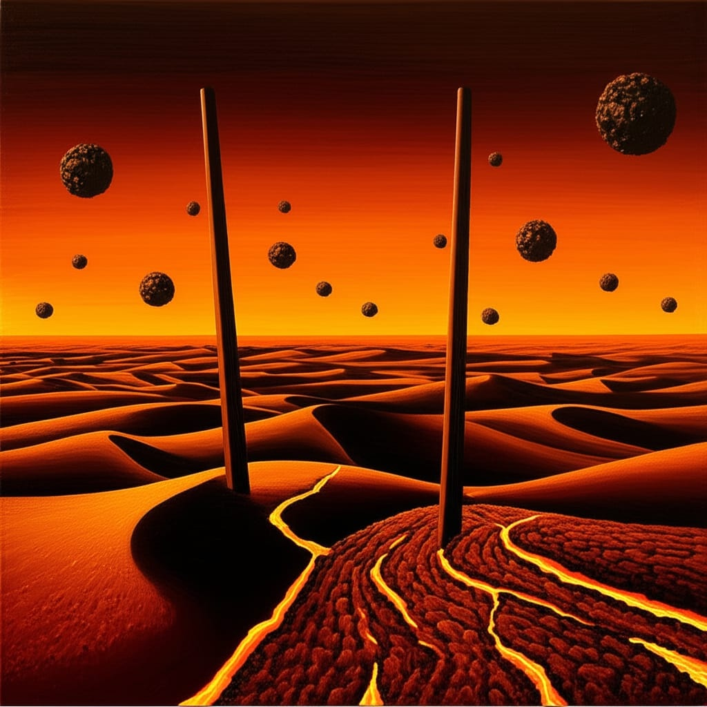
Before It Spoils 不吃就坏了
The tingle on your tongue is as vast as the universe. 舌尖上的麻，和宇宙一样大。
More walls to fill. 还有更多墙要填。
RETURN 返回